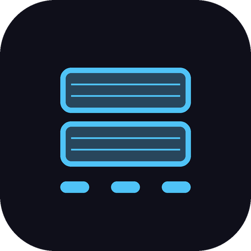

A Flutter Android app for warehouse pickers to log pallet output mid-shift without pulling out a notebook — designed by someone who'd be the one wearing the badge it tracks.
Every warehouse shift I've worked has the same gap: what you actually did and what ends up written down are two different records, because nobody stops picking to write a clean log. The paper version gets scribbled, guessed at, or skipped. The obvious digital fix — an app that logs your output automatically — has an obvious failure mode: it can just as easily become a surveillance feed. A tool built to help you prove your pace can also become the tool that times your toilet breaks.
Stacked exists to close the first gap without opening the second. It's a shift log I actually use — built for the version of me who is on shift, not the version who might one day review the data.
Built by the person who would be on the wrong end of getting the privacy model wrong.
The app never collapses output into one vague "speed." Pace and daily target use deliberately different denominators, and the UI always shows the formula, not just the result:
They may never be merged into one number. A single "speed" metric is exactly the kind of ambiguity that turns a helpful log into a weapon.
I use it on shift. Built for a pilot of roughly 25–30 warehouse workers on a rotating schedule; that pilot is recruiting, not live yet. The build, the private pilot backend, and the real shift exports stay off this page — this is the app, not the operation behind it.